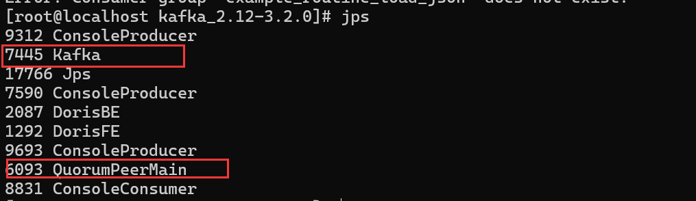
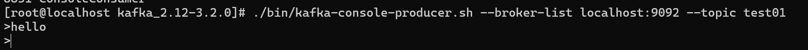
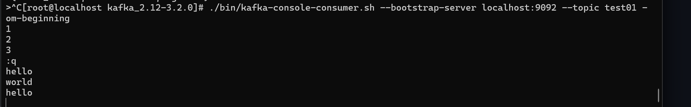

# 安装部署 KaFKa
# 1. 下载 KaFKa
wget https://archive.apache.org/dist/kafka/3.0.0/kafka_2.13-3.0.0.tgz |
# 创建安装目录
mkdir -p opt/kafka3.2 | |
cd /opt/kafka3.2 | |
mkdir logs |
# 解压安装包
tar -xvf kafka_2.12-3.2.0.tgz |
# 2. 初始化 KaFKa
# 修改 kafka-server 配置
cd /opt/kafka3.2/kafka_2.12-3.2.0 | |
vim config/vim server.properties | |
# 修改以下配置 | |
log.dirs=/opt/kafka3.2/logs | |
listeners=PLAINTEXT://0.0.0.0:9092 |
# 修改自带 zookeeper 配置
cd /opt/kafka3.2/kafka_2.12-3.2.0 | |
vim config/vim zookeeper.properties | |
dataDir=/opt/kafka3.2/zookeeper_data | |
# 创建 zk 的数据存储目录 | |
mkdir -p /opt/kafka3.2/zookeeper_data |
# 3. 启动 KaFKa 和 Zookeeper
# 启动 Zookeeper
cd /opt/kafka3.2/kafka_2.12-3.2.0 | |
./bin/zookeeper-server-start.sh config/zookeeper.properties |
# 启动 KaFKa
cd /opt/kafka3.2/kafka_2.12-3.2.0 | |
./bin/kafka-server-start.sh config/server.properties |
# jps 查看进程
jps |

# 4. 测试 KaFKa
# 创建 topic
./bin/kafka-topics.sh --create --bootstrap-server localhost:9092 --replication-factor 1 --partitions 1 --topic test01 |
# 生产者发送消息
./bin/kafka-console-producer.sh --broker-list localhost:9092 --topic test01 |

# 消息消费者
./bin/kafka-console-consumer.sh --bootstrap-server localhost:9092 --topic test01 --from-beginning |
